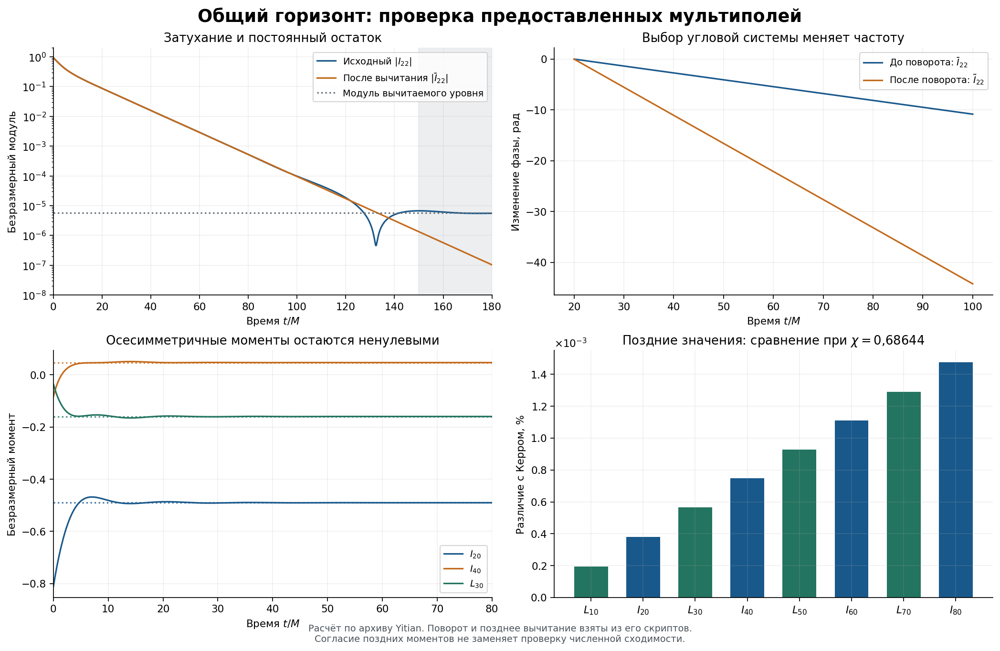
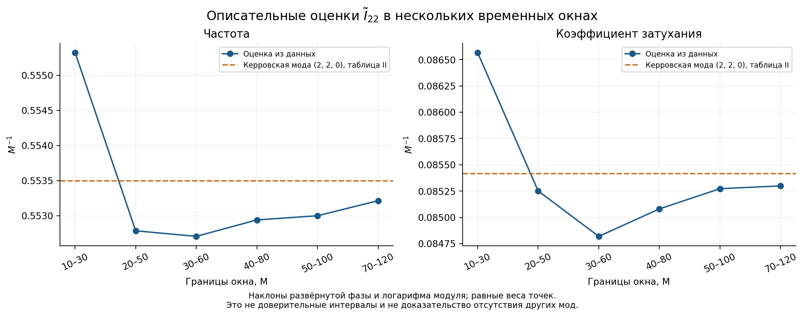

English reading edition. This is a historical stage report; the final project report takes precedence for corrected parameters and release-wide conclusions. Original figure and video labels, numerical files and programs are retained. Russian source.
Yitian A1 — Audit of the common-horizon multipoles
Historical stage: 15 September 2026. English reading edition. This report records the first audit; the corrected QC0 parameters in A2 and the final project report take precedence over earlier comparisons.
Result: the supplied series is usable, late moments agree with the Kerr reference, and the authors' angular rotation is essential when comparing frequencies. This is not a complete analysis of early-time dynamics.
Source and data integrity
The supplied archive contains Moments_500M_L30.h5 and four plotting notebooks: I40, I44, L30 and L32. The notebooks were read as text rather than executed. Although no I22 notebook is supplied, I22 is present in the coefficient array.
There are 5,001 times from 0 to 500M, spaced by 0.1M, and 81 mass plus 81 spin coefficients at each time, covering 0≤ℓ≤8. This gives 810,162 coefficient values. No missing, infinite or invalid values or duplicate times were found. The index is k=ℓ(ℓ+1)+m. The I22 phase convention at t=0 is satisfied.
The accompanying letter and paper identify an equal-mass, nonspinning, quasicircular SpEC case, SXS:BBH:0389. Time zero is the first appearance of the common horizon. Mf=0.95162M and χ=0.68644 are the reported final parameters. The AMR target, approximately 5×10⁻⁸, is not an uncertainty estimate for each individual moment. The surface is a common apparent/marginally trapped horizon, not a reconstructed global event horizon.
No waveforms, premerger surface grids, area history, pointwise metric or complete transport vector are included in this archive. The HDF5 file contains no parameter attributes establishing those missing quantities. Its SHA256 is 9cdd268e85b783d8a832b72e46945c6b43bb2b3ea0a9e6665e57a5a1b7d56f0f.
Three related definitions
The processing consists of complex conjugation of the stored coefficient, subtraction of its mean over the 1,001 samples from 400 to 500M, and the rotation exp(−imΩt), where Ω=0.20878380853617037M⁻¹.
Writing Z for the conjugated coefficient, the three series are Z, Z̄=Z−c and Z̃=Z̄exp(−imΩt). Under the convention exp(−αt−iωt), the rotation changes the frequency by +mΩ while preserving the modulus and damping envelope. Subtracting a constant can itself change the envelope. For m=0 the rotation is unity and the moments are real.
Nonzero axisymmetric late moments describe the final geometry. They must be retained for full-geometry tests, and subtracted only when studying perturbations.
For I22, c≈−4.19108266484×10⁻⁶−3.83184732336×10⁻⁶i, with magnitude 5.67875×10⁻⁶. A small late offset is not evidence of an additional structure; the dynamical analysis is limited to approximately 150M.
Symmetry controls
Expected families are I with even ℓ and even m, and L with odd ℓ and even m. Maximum coefficients in forbidden families are 8.05676×10⁻⁷ and 7.20999×10⁻⁷, respectively; their ratios to the global family scale are 4.54554×10⁻⁷ and 5.90928×10⁻⁷. Reality-condition discrepancies are at most 7.13513×10⁻¹⁴ and 4.26696×10⁻¹⁵. These are not the same statistic as the earlier HF3 symmetry diagnostic.
The monopole agrees with I00=√π to 2.75532×10⁻¹⁰. These dimensionless geometric moments are not direct measurements of mass without an area scale.
Stationary Kerr comparison
The late axisymmetric moments were compared with the stationary horizon integral
Iℓ0+iLℓ0 = π(1+b²)² ∫[−1,1] √((2ℓ+1)/(4π)) Pℓ(x)/(1−ibx)³ dx,
where b=χ/(1+√(1−χ²)). This stationary relation is not imposed on the early dynamical horizon. Increasing quadrature order from 256 to 512 changes the result by approximately 2.37×10⁻¹⁴.
| Moment | Late value | Kerr value at reported χ | Relative difference |
|---|---|---|---|
| I00 | 1.7724538509 | 1.7724538509 | 3.34485×10⁻¹²% |
| L10 | 1.2201122006 | 1.2201098276 | 0.000194485% |
| I20 | −0.49007097717 | −0.49006911074 | 0.000380850% |
| L30 | −0.15994983906 | −0.15994893591 | 0.000564649% |
| I40 | 0.046545899370 | 0.046545551525 | 0.000747321% |
| L50 | 0.012584755470 | 0.012584638504 | 0.000929437% |
| I60 | −0.0032322980724 | −0.0032322621643 | 0.001110930% |
| L70 | −0.00079927930616 | −0.00079926898482 | 0.001291350% |
| I80 | 0.00019195414464 | 0.00019195130926 | 0.001477140% |
Using L10=√(3π)b yields χ=0.68644097081, differing from the five-decimal supplied value by about 9.71×10⁻⁷. Other moments then agree at approximately 10⁻¹¹. This is internal consistency and sensitivity to rounding, not a claim of physical accuracy at that level. Mf cannot be independently recovered from these dimensionless moments without the area.
I22 frequency and damping
Unwrapped phase and log amplitude were fitted with equal weights. The rounded paper reference is ω=0.5535M⁻¹ and α=0.08541898M⁻¹ (τ=11.707M).
| Window, M | Frequency before rotation | Frequency after rotation | Damping α | Frequency difference | Damping difference |
|---|---|---|---|---|---|
| 10–30 | 0.137759 | 0.555326 | 0.086568 | 0.330% | 1.345% |
| 20–50 | 0.135220 | 0.552787 | 0.085251 | 0.129% | 0.197% |
| 30–60 | 0.135140 | 0.552708 | 0.084819 | 0.143% | 0.703% |
| 40–80 | 0.135375 | 0.552942 | 0.085080 | 0.101% | 0.397% |
| 50–100 | 0.135434 | 0.553001 | 0.085272 | 0.090% | 0.172% |
| 70–120 | 0.135648 | 0.553216 | 0.085299 | 0.051% | 0.141% |
Frequencies and damping are in M⁻¹. Alternative mean windows 350–500 and 450–500M were checked. This descriptive single-oscillation analysis does not establish a full multimode uncertainty budget.


Relation to QC0 and next stage
Different final masses and spins do not invalidate the internal QC0 tests: the two initial configurations have not been established as identical. Yitian's parameters must not replace QC0's own horizon parameters. The earlier prose also misidentified QC0 angular momentum as dimensionless spin and transposed digits in its mass; A2 corrects those statements using the archived program and outputs.
The next stage was an early-time, multimode analysis with explicit prediction windows. This audit does not establish new physics, reconstruct a full merger movie or identify an additional physical object.
The archived BH_YITIAN_A1_audit.py accepts the original ZIP or HDF5 input and an output directory. The original input remains separately attributed. Methodological reference: Chen et al..
English Markdown